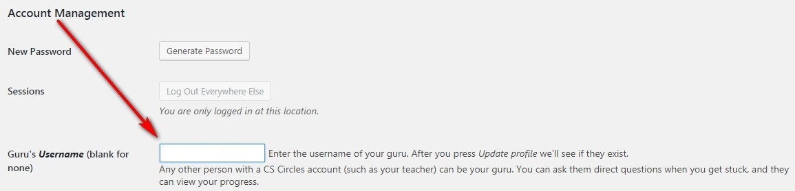

Unit 2: Intro to Python
Activity 1: Creating a CSCircles account
Content
Software programming requires the use of a programming language that the computer can understand to provide instructions so the computer will do what the programmer intends. Programmers create software programs to create products (computer programs or apps)for users in order to solve a problem or complete a task using a computing device.
One language that is commonly used is called Python. Python is an easy to learn and use language that can still be used to create sophisticated programs for computers, web sites and mobile devices.
We will be using a special Web Based program from Waterloo University to learn the basics of programming using Python. The Computer Science Circles web site will allow you to start your studies in programming.
To prepare for this unit of the course you must complete the following steps:
- Go to the Computer Science Circles Site at http://cscircles.cemc.uwaterloo.ca/
- You must create a free account. The link to do this is at the top right corner of the page.

- Once your account is created you will receive an email notification. When the account is created go to your profile (click on your login name at the top right of the page and select profile.
- In the profile - under Account Management (scroll down!) beside Guru's Username - type in Mr. Wong (my login for the site). This will connect me to your progress.

You may now begin working through the tutorials. The next activity will explain how your progress will be assessed.